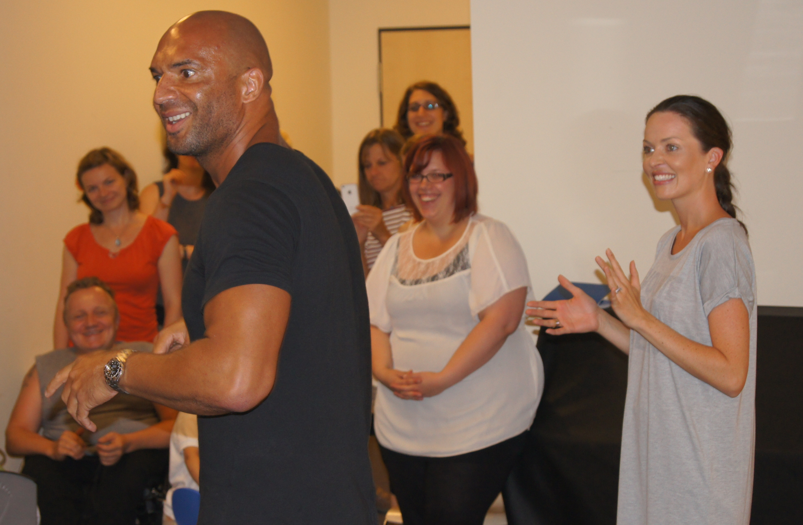

Viele unserer Kinder und Jugendlichen fühlten sich durch ihre Krankheit vom normalen Leben abgeschnitten. Ihre Freunde gingen zur Schule, trafen sich, spielten Fußball, hörten Musik oder gingen tanzen. Unsere Patienten verbrachten ihre Tage dagegen zwischen Station, Untersuchungen, Chemotherapie und langen Wartezeiten. Dieses Gefühl, auf der Verliererseite zu stehen, wollte ich immer wieder durchbrechen.
Mir ging es nicht nur um Ablenkung. Die Kinder sollten etwas erleben, von dem sie später erzählen konnten. Etwas, das ihre gesunden Freunde nicht erlebt hatten. Ein Nachmittag mit einem bekannten Tänzer gehörte genau in diese Kategorie. Irgendwann kam ich auf die Idee, Detlef D! Soost anzuschreiben. Soost war ab dem Jahr 2000 Choreograf und ab der zweiten Staffel von 2001 bis 2012 Jurymitglied in der Castingshow Popstars.
Wie genau der Kontakt zustande kam, weiß ich heute nicht mehr. Wahrscheinlich schrieb ich ihm einfach eine E-Mail und fragte, ob er sich vorstellen könne, einen Nachmittag mit unseren Kindern in der Klinik zu verbringen. Nicht für einen großen Auftritt, nicht für Fernsehkameras, sondern ganz einfach im Theater unserer Kinderklinik. Tanzen, Singen, Bewegung, Spaß. Er antwortete tatsächlich.
Damals lebte er in Berlin-Mitte. Der Weg nach Buch war für Berliner Verhältnisse überschaubar, jedenfalls wenn man nicht gerade im Berufsverkehr unterwegs war. Außerdem war er zu dieser Zeit frisch mit Kate Hall verheiratet, und die beiden hatten gerade selbst ein Kind bekommen. Vielleicht waren sie deshalb besonders offen für unsere Anfrage.
Am 8. August 2012 kamen Detlef D! Soost und Kate Hall zu uns in die Kinderklinik. Er fuhr mit seinem Jaguar vor, was natürlich sofort bemerkt wurde. In unserem Theater warteten bereits die Kinder, einige Eltern und Mitarbeiterinnen der Station. Für zwei Stunden gehörte der Raum nicht der Krankheit, sondern der Musik.
Detlef machte das großartig. Er stellte sich nicht auf die Bühne und spielte den Star. Er ging zu den Kindern, sprach sie direkt an, nahm ihnen die Scheu und brachte Bewegung in den Raum. Kate Hall war ebenso freundlich und unkompliziert. Es wurde getanzt, gesungen, gelacht und geklatscht. Manche Kinder konnten richtig mitmachen, andere saßen dabei, bewegten sich so gut es ging oder genossen einfach die Stimmung.

Für Eltern chronisch kranker Kinder sind solche Momente besonders kostbar. Sie sehen ihre Kinder oft über Wochen erschöpft, ängstlich oder traurig. An diesem Nachmittag sahen sie sie lachen. Das war mehr wert als jede perfekte Choreografie.
Später habe ich Detlef noch einmal zu einem unserer Kinderfeste eingeladen. Auch diesmal kam er mit Kate Hall vorbei, wieder ohne Honorar, wieder völlig unkompliziert. Er animierte die Kinder, brachte sie zum Mitmachen und schenkte ihnen einen Nachmittag, der mit Krankenhaus nichts zu tun hatte.
Genau darum ging es mir bei all diesen Projekten. Die Kinder sollten nicht nur Patienten sein. Sie sollten erleben, dass sie gesehen werden, dass jemand für sie kommt und dass sie für einen Nachmittag im Mittelpunkt stehen dürfen.
Ein berühmter Tänzer, ein paar Lieder, ein Theater in einer Kinderklinik und Kinder, die plötzlich wieder lachten. Manchmal braucht es gar nicht viel mehr.